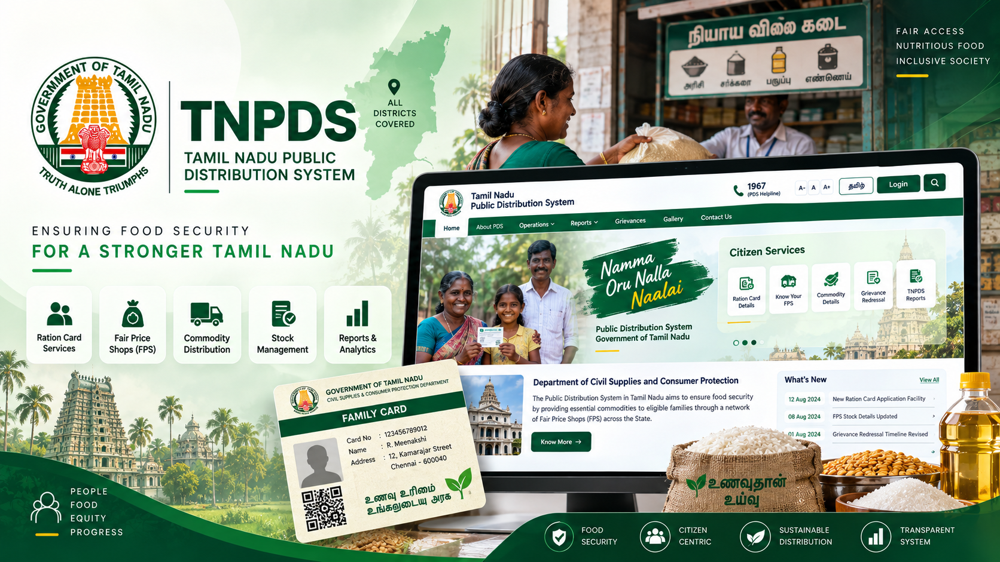
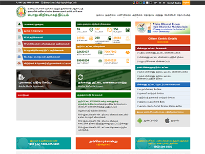
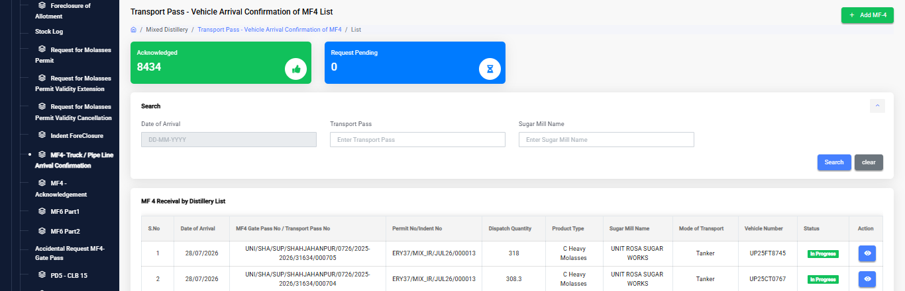
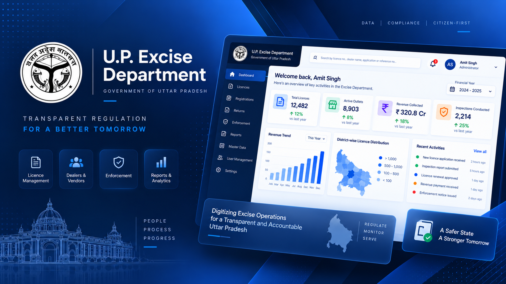
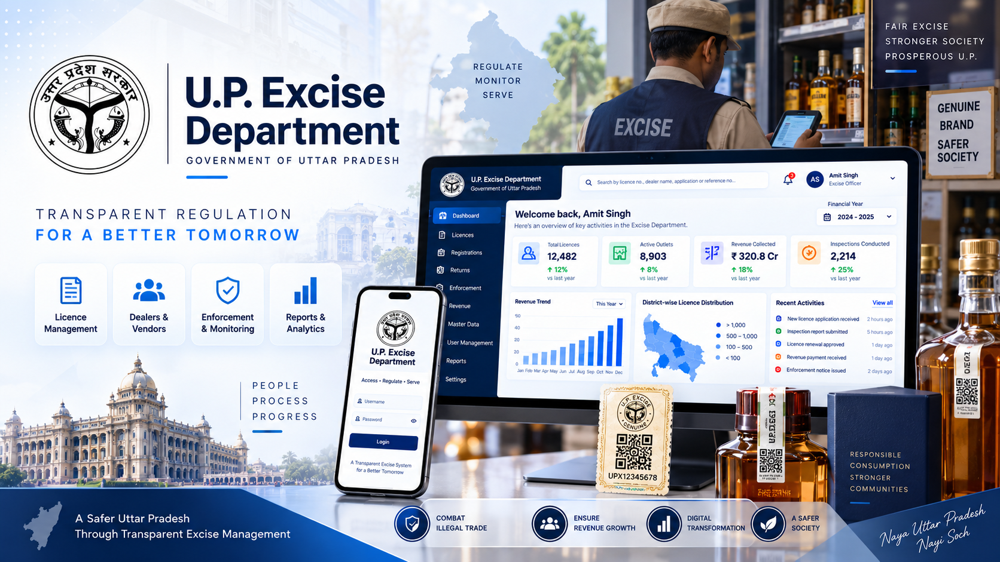

Tamil Nadu Public Distribution System
Designing a clearer citizen-facing experience for essential government services.
UI/UX design and interface refinement for the TNPDS Public Portal, focused on service discovery, information architecture, usability and responsive citizen-facing experiences.
Client
Tamil Nadu Public Distribution System
Platform
TNPDS Public Portal
Role
UI/UX Design
Focus
Services · Information · Usability

TNPDS Public Portal — citizen-facing government service experience.
Citizen-facing
Public service experience
Service-led
Government services & access
Information-rich
Content & service discovery
Responsive
Web experience across devices
The brief
The Tamil Nadu Public Distribution System (TNPDS) is a citizen-facing digital platform that brings essential Public Distribution System services and information together in one online experience.
My primary work on the TNPDS project focused on the Public Portal, with an emphasis on creating clear, accessible and responsive interfaces for citizens interacting with government services online.
The work involved thinking beyond individual pages and considering how users discover services, understand information, navigate between sections and complete service-related tasks within the portal.
"For citizen-facing government platforms, clarity is not just a visual quality — it is part of the service itself."
The challenge
Government service portals bring together a wide range of information and services that need to remain understandable to users with different levels of familiarity with digital systems.
The challenge was to create an interface that could accommodate this breadth of information without making the experience feel complicated or difficult to navigate.
Service discovery
Users need to quickly understand what services are available and where to find the information relevant to their needs. Clear grouping, hierarchy and navigation therefore become important parts of the experience.
Information complexity
A public distribution system contains different types of information, services, notices and user interactions. The interface needs to present these different content types in a way that remains structured and easy to scan.
Different user needs
Not every visitor approaches the portal with the same goal. Some users may be looking for general information, while others may be trying to access a specific service or find the status of an existing request. The experience therefore needs to support both exploration and task-oriented navigation.
Responsive access
The public portal also needs to remain usable across different screen sizes. Responsive layouts, readable content, accessible controls and appropriate spacing help maintain a consistent experience across devices.
Understanding the public portal
Before approaching individual interface elements, the experience needs to be understood as a collection of connected citizen services rather than a set of independent pages.
The public portal brings together service access, information, notifications and other citizen-facing resources within the wider TNPDS ecosystem. This makes information architecture and navigation especially important to the overall experience.

TNPDS Public Portal — the citizen-facing entry point for Public Distribution System services and information.
Design strategy
The design approach focused on making the TNPDS Public Portal easier to understand and navigate by giving services, information and actions a clear and consistent structure.
Service clarity
Make services and their purpose easier to understand so citizens can quickly identify what they need.
Clear information hierarchy
Organise content, navigation and supporting information so users can scan the portal and understand where to go next.
Responsive accessibility
Maintain readable content, usable controls and a consistent experience across different screen sizes and access contexts.
Process
Understand → Structure → Design → Refine
I approached the TNPDS Public Portal by first understanding the services, information and content that citizens need to access. I then considered how these elements should be structured across the portal before refining the interface, responsive behaviour and reusable UI patterns.
Understand the services
Understand the purpose of each service, the information users need and the actions available through the public portal.
Structure information
Organise services, content and navigation into a structure that makes the portal easier to explore and understand.
Design the interface
Translate the information structure into clear layouts, navigation, service sections and reusable interface components.
Refine the experience
Review the interface against the workflow and refine hierarchy, spacing, information visibility and interaction patterns where required.
Consider responsive use
Ensure the interface remains readable, usable and consistent across different screen sizes and access contexts.
Public portal experience
The TNPDS Public Portal brings together multiple citizen-facing services and information within a single government platform. The interface needs to help users move from discovering a service to understanding the information available and taking the appropriate next step.
My focus was on creating a clear visual hierarchy across these experiences, while maintaining consistency in navigation, content sections, service access and responsive interface behaviour.
TNPDS Public Portal — bringing citizen services and public information together within a single digital experience.

Technical Resource Attendance Verification workflow showing structured information, detailed entries and approval actions.

Tamil Nadu Public Distribution System administration interface.

IESCMS access and authentication interface.
01
Service discovery
Organise citizen-facing services so users can quickly recognise available options and identify the service relevant to their need.
02
Information access
Present supporting information with clear hierarchy so users can scan content and understand what is relevant to them.
03
Consistent interaction
Maintain familiar layouts, controls and interaction patterns across different areas of the public portal.
Key design decisions
Information architecture
A public service portal needs to help users understand what is available before asking them to interact with the system. I focused on organising services, supporting information and navigation into a structure that makes the portal easier to explore.
Clear grouping and hierarchy help users move from broad information to the specific service or action they are looking for without having to understand the underlying complexity of the government system.
Service discovery & navigation
Service discovery was an important part of the public-facing experience. Navigation and service entry points need to be recognisable and predictable so citizens can identify the appropriate path quickly.
The interface therefore gives priority to clear labels, familiar navigation patterns and visible service entry points while keeping supporting information available when required.
Content hierarchy
The portal contains different types of government information, from service-related content to notices and supporting resources. Establishing a consistent hierarchy helps users distinguish primary information from secondary content.
Typography, spacing, grouping and visual emphasis are used to create clearer relationships between sections and make information easier to scan.
Responsive experience
The public portal needs to remain usable across different screen sizes. Responsive layouts, appropriate spacing and readable content help preserve the same core experience when users access the portal from different devices.
Consistent interaction patterns
Consistency helps users build familiarity as they move between different services and sections of the portal. Reusable patterns for navigation, buttons, forms, information blocks and service interactions help create a more predictable experience.
"Good citizen-facing UX makes complex government services feel understandable without hiding the information users need."
Reflections
Working on the TNPDS Public Portal reinforced the importance of designing government services around clarity and accessibility. When a portal brings together many services and information types, users should not need to understand the complexity behind the system to find what they need.
The project strengthened my approach to information architecture, service discovery, content hierarchy and responsive interface design. It also highlighted how consistency across navigation, content and interaction patterns can make a large public-facing platform easier to understand.
The experience reinforced a principle I continue to apply in my work: good public-service design should make essential information easier to find, understand and act upon.
Interested in creating a clearer digital experience for your users? Get in touch — I'd be happy to discuss your product, platform or service.